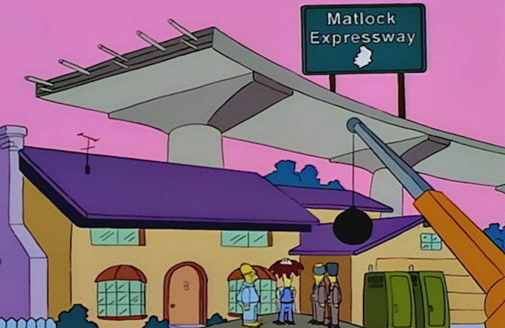
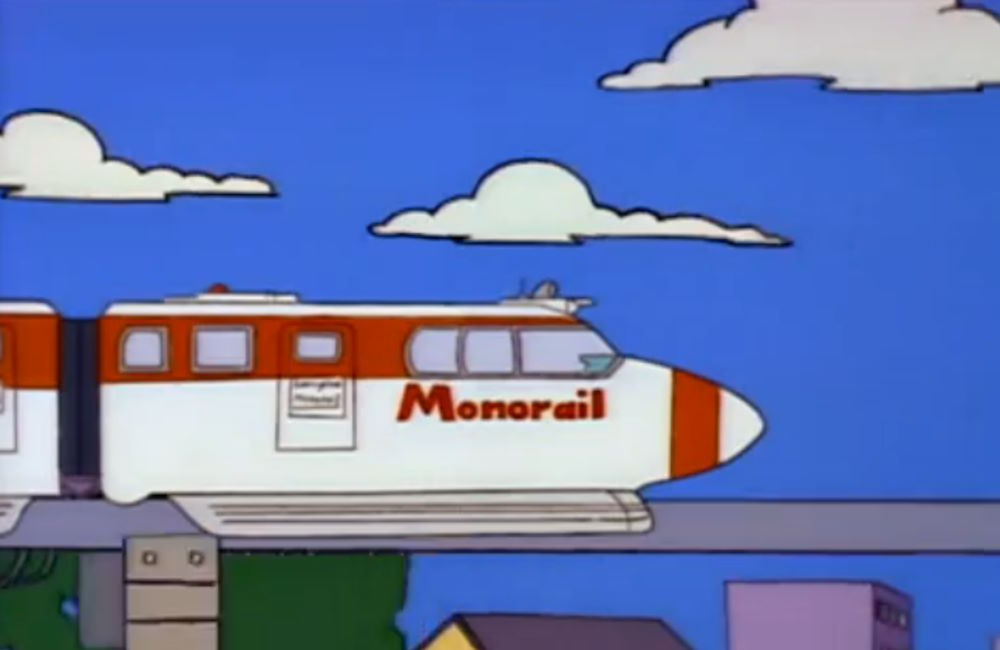

Cómo llegar a Krustyland
Coche
Salida 7 de la autopista Matlock

Avión
A traves de Air Springfield, en el aeropuerto de Springfield, se podrá coger el autobus que lleva al centro de la ciudad, pasando por Krustyland
Monorrail
La linea de monorrail de Springfield tiene parada en Krustyland, siendo este el medio de tranpsorte mas sostenible, rápido y accesible
